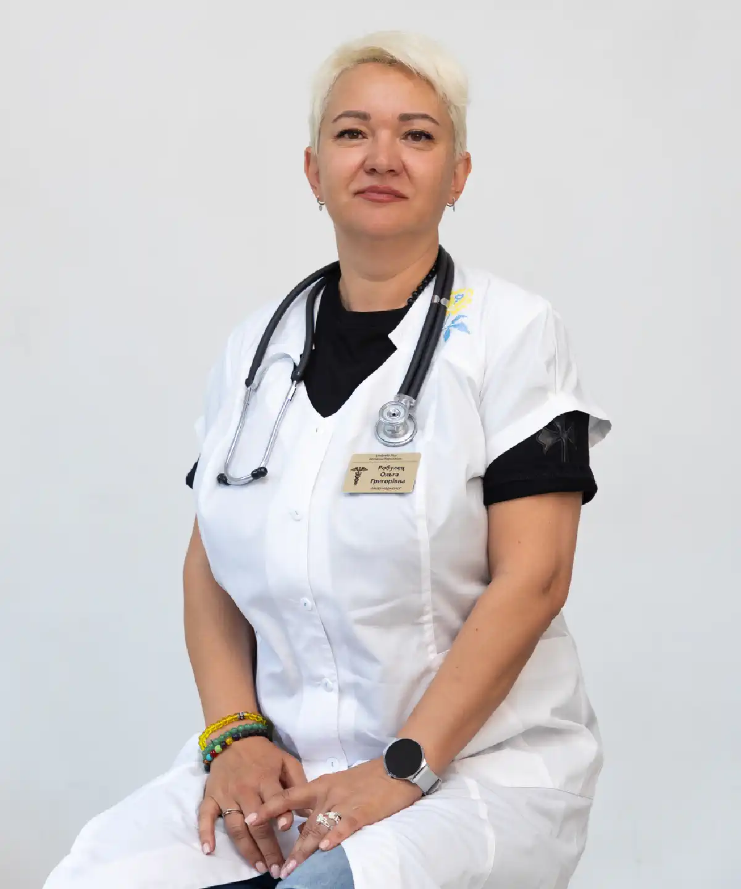

+38(068) 79 72 782
+38(068) 79 72 782Кодирование от алкоголизма в Харькове
Трезвость начинается сегодня


Бесплатная консультация, работаем круглосуточно 24/7
Трезвость начинается сегодня
Кодирование от алкоголизма в Харькове — это медицинский метод, который помогает сформировать устойчивый отказ от употребления спиртного и значительно снизить риск срывов. Его основная задача — дать человеку так называемый «защитный период», в течение которого тяга к алкоголю находится под контролем, а само употребление становится психологически и/или физиологически нежелательным. За счёт этого у пациента появляется время и внутренний ресурс для восстановления организма, стабилизации психоэмоционального состояния и изменения образа жизни. Кодировка не является «волшебной таблеткой» и не решает проблему зависимости за один день. Алкоголизм — это хроническое заболевание, которое формируется годами и затрагивает не только физическое здоровье, но и мышление, поведение, эмоциональные реакции и социальные привычки. Именно поэтому кодирование рассматривается как один из этапов комплексного лечения, а не как самостоятельное и окончательное решение. При правильном подборе метода, грамотной медицинской подготовке и дальнейшем сопровождении врача кодирование становится мощным инструментом, который помогает удержаться от употребления в самый уязвимый период.
В наркологической клинике UmbrellaPlus в Харькове кодирование проводится анонимно, с индивидуальным планом лечения и обязательным акцентом на безопасность пациента. Перед процедурой врач-нарколог подробно оценивает состояние здоровья, стаж и характер употребления, наличие запоев, сопутствующие заболевания и возможные противопоказания. Такой подход позволяет выбрать оптимальный метод кодирования, который будет не только эффективным, но и максимально безопасным именно для данного человека. Кодирование от алкоголизма помогает разорвать замкнутый круг зависимости, когда человек снова и снова возвращается к спиртному из-за тяги, стресса или привычки. Получив период трезвости, пациент может начать восстанавливать сон, работу нервной системы, сердца, печени и других органов, а также постепенно возвращаться к нормальной социальной и семейной жизни. В сочетании с психологической поддержкой, мотивационной работой и профилактикой срывов кодирование становится важной опорой на пути к устойчивой трезвости и долгосрочному результату.
Закодироваться от алкоголя — значит пройти медицинскую процедуру, направленную на снижение тяги к спиртному и формирование устойчивого отказа от его употребления. Это осознанный шаг, при котором человек принимает решение защитить себя от срывов и получить поддержку медицины на этапе отказа от алкоголя. Кодирование не подавляет волю и не «ломает» личность, а, наоборот, создаёт условия, при которых трезвость становится более стабильной и управляемой.
В зависимости от выбранного метода кодирование может работать по разным механизмам. Медикаментозные способы основаны на лекарственном воздействии: в организме формируется реакция, при которой употребление алкоголя становится опасным или крайне неприятным для самочувствия. Это создаёт чёткий физиологический барьер и усиливает ответственность за отказ от спиртного. Психотерапевтические методы, в свою очередь, направлены на работу с подсознанием, установками и мотивацией человека. С помощью специальных техник меняется восприятие алкоголя, ослабляется психологическая тяга и формируется внутренняя установка на трезвую жизнь.
Существует также комбинированный подход, когда медикаментозное кодирование дополняется психотерапевтической поддержкой. Такой вариант считается одним из самых эффективных, поскольку воздействует одновременно на физические и психологические механизмы зависимости. Человек получает не только «запрет» на алкоголь, но и понимание, зачем ему нужна трезвость и как удержать результат в повседневной жизни. Общая цель кодирования всегда одна — закрепить период трезвости и снизить вероятность рецидива в период восстановления. Получив время без алкоголя, человек может восстановить здоровье, наладить сон и эмоциональное состояние, пересмотреть привычки и научиться справляться со стрессом без спиртного. Именно поэтому кодирование рассматривается как важный этап комплексного лечения алкоголизма, который помогает перейти от постоянной борьбы с тягой к более стабильной и осознанной трезвой жизни.
Процедура кодирования в Харькове начинается с обязательной консультации нарколога. На этом этапе врач подробно оценивает общее состояние пациента, стаж и характер употребления алкоголя, частоту и длительность запоев, выраженность абстинентного синдрома, наличие хронических заболеваний, принимаемые лекарственные препараты и возможные противопоказания. Такой медицинский осмотр необходим, чтобы исключить риски осложнений и подобрать метод кодирования, который будет максимально безопасным и эффективным именно в конкретной ситуации. После оценки состояния определяется формат кодирования: медикаментозный, психотерапевтический или комбинированный.
Как правило, перед проведением кодировки требуется определённый период трезвости. Это принципиально важно, поскольку наличие алкоголя в организме может снизить эффективность процедуры и повысить вероятность нежелательных реакций. Если пациент находится в состоянии интоксикации или после длительного запоя, сначала проводится медицинская подготовка. Она может включать детоксикацию — например, постановку капельницы для выведения токсинов, снятия интоксикации и стабилизации работы нервной и сердечно-сосудистой системы. Дополнительно врач уделяет внимание нормализации сна, артериального давления, общего самочувствия и эмоционального состояния пациента. После подготовительного этапа выполняется само кодирование выбранным методом. Процедура проходит под медицинским контролем и занимает относительно немного времени, но её результат во многом зависит от правильной подготовки и соблюдения рекомендаций врача. По завершении кодирования пациент получает подробные разъяснения и индивидуальные рекомендации по поддержанию эффекта: режим дня, питание, избегание алкогольных триггеров, способы работы с тягой, необходимость психотерапии и важность поддержки со стороны семьи и близких. Такой комплексный подход позволяет не только провести кодирование, но и создать условия для более устойчивой и длительной трезвости.
Эффективность кодирования во многом определяется тремя ключевыми факторами: правильным выбором метода, внутренней готовностью пациента к трезвой жизни и наличием поддержки после процедуры. Эти составляющие тесно связаны между собой и работают как единая система. Даже самый современный и технически правильно выполненный метод кодирования не сможет дать устойчивого и долгосрочного результата, если он применяется изолированно, без учёта психологического состояния человека, уровня его мотивации и без дальнейшей работы с причинами зависимости. Именно поэтому в современной наркологии кодировка рассматривается не как самостоятельное решение проблемы алкоголизма, а как важный этап комплексного и системного лечения.
На практике кодирование показывает наилучшие результаты в рамках поэтапного подхода, который включает несколько последовательных шагов: детоксикация → кодирование → психотерапия или реабилитация → профилактика срывов. Детоксикация играет фундаментальную роль, поскольку позволяет очистить организм от алкоголя и продуктов его распада, снизить уровень интоксикации, нормализовать сон, давление, работу нервной системы и общее физическое состояние. Без этого этапа человек продолжает находиться в состоянии стресса и перегрузки, что значительно снижает эффективность любых дальнейших методов лечения. Кодирование, проведённое после стабилизации состояния, создаёт своеобразный защитный барьер. Оно помогает снизить тягу к алкоголю и ограничить возможность срыва в наиболее уязвимый период, когда привычка к употреблению ещё сильна, а новые модели поведения только формируются. Этот этап даёт пациенту время и пространство для восстановления — как физического, так и психоэмоционального.
Следующим важным звеном является психотерапия или реабилитация. Именно на этом этапе происходит глубокая работа с причинами зависимости: стрессами, травмами, внутренними конфликтами, неумением справляться с эмоциями и жизненными трудностями без алкоголя. Психотерапия помогает изменить мышление, научиться распознавать и контролировать триггеры, вырабатывать навыки трезвого реагирования на сложные ситуации и постепенно формировать устойчивую мотивацию к трезвой жизни. Реабилитационные программы дополнительно создают поддерживающую среду, где человек не остаётся один на один со своей проблемой. Завершающим и не менее важным этапом является профилактика срывов. Она направлена на закрепление достигнутого результата и формирование новых, здоровых моделей поведения. Пациент учится заранее распознавать опасные ситуации, правильно реагировать на стресс, выстраивать границы в общении и поддерживать трезвость в повседневной жизни. Именно этот этап во многом определяет, будет ли ремиссия краткосрочной или длительной.
Если человек рассчитывает только на саму процедуру кодирования и при этом не меняет привычки, окружение и образ жизни, результат, как правило, оказывается нестабильным. Алкогольные триггеры, старые сценарии поведения, социальное давление и неумение справляться с напряжением со временем приводят к росту внутреннего конфликта и повышению риска рецидива. В таких случаях кодировка может дать лишь временную паузу, кратковременное облегчение или отсрочку срыва, но не решить проблему зависимости в корне. Если же кодирование становится «стартовой точкой» осознанной трезвости и подкрепляется регулярной психологической работой, поддержкой близких и реальными изменениями образа жизни, шансы удержать длительную ремиссию значительно возрастают. Человек получает не только медицинскую защиту, но и практические инструменты для трезвой жизни: навыки самоконтроля, стрессоустойчивость, новые привычки и цели. Именно такой подход делает результат кодирования более устойчивым, предсказуемым и эффективным в долгосрочной перспективе.
| Кодирование уколом Харьков | Цена |
|---|---|
| Инъекция препарата Дисульфирам (3 месяца) | От 4000 грн |
| Инъекция препарата Дисульфирам (6 месяцев) | От 6000 грн |
| Инъекция препарата Дисульфирам (12 месяцев) | От 8000 грн |
| Инъекция препарата Эспераль (6 месяцев) | От 6000 грн |
| Инъекция препарата Эспераль (12 месяцев) | От 8000 грн |
| Инъекция препарата Тетолонг (6 месяцев) | От 8000 грн |
| Инъекция препарата Тетолонг (12 месяцев) | От 12000 грн |
| Инъекция препарата Вивитрол (12 месяцев) | От 12000 грн |
| Инъекция препарата Аквилонг (12 месяцев) | От 12000 грн |
| Авторское трехэтапное кодирование уколом (1-5 лет) | От 12000 грн |
| Раскодировка от алкоголизма (укола) | От 6000 грн |
| Хирургическое кодирование от алкоголизма Харьков | Цена |
|---|---|
| Имплантация (подшивка) капсулы Эспераль (12 месяцев) | От 10000 грн |
| Имплантация (подшивка) капсулы Эспераль (18 месяцев) | От 12000 грн |
| Имплантация (подшивка) капсулы Эспераль (24-36 месяцев) | От 15000 грн |
| Имплантация (подшивка) геля Дисульфирам (12 месяцев) | От 10000 грн |
| Имплантация (подшивка) геля Дисульфирам (18 месяцев) | От 12000 грн |
| Имплантация (подшивка) геля Дисульфирам (24-36 месяцев) | От 15000 грн |
| Раскодировка от алкоголизма (хирургически) | От 8000 грн |
| Психотерапевтическое кодирование от алкоголизма Харьков | Цена |
|---|---|
| Кодирование по методу Довженко (1-5 лет) | От 10000 грн |
| Кодирование гипнозом (1-5 год) | От 10000 грн |
| Авторское кодирование от алкоголизма гипнозом (5 лет) | От 12000 грн |
| Трехэтапное кодирование от алкоголизма гипноз + метод Довженко (5-10 лет) | От 20000 грн |
| Психофармакологическое кодирование от алкоголизма (1-5 лет) | От 20000 грн |
| Кодирование от алкоголизма лазером | От 10000 грн |
| Таблетированное кодирование от алкоголизма | Цена |
|---|---|
| Кодирование от алкоголизма Эспераль таблетки | От 1400 грн |
| Кодирование от алкоголизма Тетурам таблетки | От 1400 грн |
| Кодирование от алкоголизма Дисульфирам таблетки | От 1400 грн |
| Кодирование от алкоголизма Капли Мидзо | От 1400 грн |
Желание «закодироваться навсегда» вполне понятно и естественно: человек устает от постоянной борьбы с алкоголем, срывов, чувства вины и последствий употребления и хочет раз и навсегда поставить точку в этой проблеме. Многие надеются, что одна процедура сможет полностью закрыть тему алкоголя и избавить от риска рецидива. Однако в медицинской практике важно смотреть на зависимость реалистично и честно, без ложных обещаний и иллюзий.
Алкогольная зависимость — это хроническое состояние, при котором меняется работа головного мозга, системы вознаграждения, реакции на стресс и эмоции. Даже после длительного периода трезвости мозг может сохранять уязвимость к алкоголю: определённые ситуации, сильные переживания, социальное давление или привычные триггеры способны вновь активировать тягу. Именно поэтому ни один метод кодирования не может гарантировать эффект «навсегда» в формате одной-единственной процедуры. Кодирование действительно может дать длительный и ценный период защиты. В это время снижается тяга, появляется физиологический и психологический барьер перед употреблением, восстанавливается организм и появляется возможность выстроить новую модель жизни без алкоголя. Но устойчивый результат формируется не за счёт самой процедуры, а за счёт того, как человек использует этот период трезвости.
Понятие «навсегда» в лечении алкоголизма — это не разовая кодировка, а устойчивая система трезвости. В неё входят внутренняя мотивация, осознанное отношение к зависимости, поддержка специалистов и близких, формирование новых привычек, изменение окружения, умение справляться со стрессом и эмоциональными нагрузками без алкоголя. Не менее важна работа с причинами употребления — психологическими, социальными или поведенческими факторами, которые раньше подталкивали человека к спиртному. Когда кодирование используется как часть этой системы, оно перестаёт быть временной мерой и становится прочной опорой для трезвой жизни. Человек учится жить без алкоголя не из страха перед последствиями, а из понимания ценности своего здоровья, стабильности и качества жизни. Именно такой подход даёт реальный шанс на длительную, а в перспективе и пожизненную трезвость, пусть и не в формате «одной процедуры навсегда», а как осознанный и поддерживаемый выбор.
«Вечная кодировка» — это миф, который часто возникает из желания найти простое и окончательное решение сложной проблемы. На практике ни один медицинский или психотерапевтический метод не способен полностью и раз и навсегда отменить биологические и психологические механизмы алкогольной зависимости. Алкоголизм формируется на уровне работы головного мозга, системы вознаграждения, эмоциональных реакций и поведенческих привычек, и эти изменения не исчезают мгновенно даже после длительного периода трезвости.
Любая кодировка имеет определённый срок действия либо требует поддерживающих этапов и дальнейшей работы с зависимостью. Медикаментозные методы рассчитаны на ограниченный период, в течение которого создаётся физиологический барьер для употребления алкоголя. Психотерапевтические методы также нуждаются в закреплении и регулярной поддержке, так как установки и реакции человека могут ослабевать под воздействием внешних факторов. Именно поэтому кодирование рассматривается как часть процесса, а не как окончательный финал лечения.
На риск срыва существенно влияют стрессовые ситуации, эмоциональные перегрузки, конфликтное окружение, травмирующие события, а также привычные сценарии поведения, связанные с алкоголем. Если эти факторы остаются без внимания, даже после успешной кодировки человек может столкнуться с возвращением тяги. В такие моменты становится очевидно, что проблема заключается не только в самом алкоголе, но и в том, какую роль он играл в жизни человека. Реальная цель современной медицины и наркологии — не давать ложных обещаний и не создавать иллюзию «вечного запрета», а обеспечить безопасную и стабильную ремиссию. Задача врача — снизить риски срывов, помочь восстановить физическое и психоэмоциональное состояние и дать пациенту инструменты для трезвой жизни. Честный и профессиональный подход позволяет выстроить долгосрочную стратегию выздоровления, основанную на поддержке, осознанности и реальных возможностях человека, а не на обещании невозможного.
Укол от алкоголизма действительно часто выбирают благодаря его удобству и быстрому старту эффекта. Для многих пациентов это понятный и наглядный формат лечения: после процедуры формируется чёткий «барьер», который помогает удержаться от употребления алкоголя в самый критический и уязвимый период. Человек понимает последствия нарушения кодировки, ощущает медицинскую защиту и получает дополнительную опору в момент отказа от спиртного, когда тяга ещё достаточно сильна.
Однако называть укол от алкоголизма «лучшим методом для всех» было бы неправильно и даже небезопасно. Алкогольная зависимость всегда индивидуальна: у людей разный стаж употребления, состояние здоровья, психоэмоциональный фон, уровень мотивации и опыт предыдущих попыток лечения. Кому-то действительно хорошо подходит медикаментозное кодирование, основанное на лекарственном воздействии. В других случаях больший эффект дают психотерапевтические методы, которые работают с установками, страхами и внутренней мотивацией. Нередко оптимальным решением становится комбинированный подход, при котором медикаментозный укол дополняется психологической поддержкой. Выбор метода кодирования должен происходить только после консультации с врачом-наркологом. Специалист оценивает общее состояние пациента, наличие хронических заболеваний и противопоказаний, принимает во внимание принимаемые препараты и особенности реакции организма. Такой подход позволяет избежать осложнений и подобрать метод, который будет не только эффективным, но и безопасным.
В итоге лучший метод кодирования — это не самый популярный и не тот, о котором больше говорят, а тот, который подходит именно вам. Он должен учитывать индивидуальные медицинские особенности, быть безопасным при вашем состоянии и усиливать личную мотивацию к трезвости. Именно сочетание медицинской защиты и внутренней готовности человека даёт наилучший и наиболее устойчивый результат в лечении алкогольной зависимости.
Вопрос о том, можно ли «раскодироваться», действительно возникает очень часто, особенно у пациентов, которые испытывают страх перед процедурой или сомневаются в своих силах удерживать трезвость. Важно понимать, что раскодирование — это не бытовая манипуляция и не формальность, а медицинский процесс, который требует профессионального подхода и контроля специалиста.
Если применялся медикаментозный метод кодирования, любые решения, связанные с его отменой или изменением, принимает исключительно врач-нарколог. Самостоятельные попытки «снять кодировку», проверить её действие или сознательно нарушить запрет на употребление алкоголя крайне опасны. Такие действия могут привести к тяжёлым последствиям для здоровья, включая острые реакции со стороны сердечно-сосудистой системы, резкое ухудшение самочувствия и необходимость экстренной медицинской помощи. Именно поэтому при возникновении сомнений или необходимости изменить план лечения важно сразу обращаться к специалисту, а не экспериментировать с собственным здоровьем. Если речь идёт о психотерапевтическом кодировании, его эффект также корректируется только специалистом. Несмотря на то что такие методы не связаны с прямым лекарственным воздействием, самостоятельное «снятие» установок или игнорирование рекомендаций врача снижает эффективность лечения и повышает риск срыва. Психотерапевтическая работа требует постепенности, доверия и профессионального сопровождения, а не резких и непродуманных решений.
Ключевой момент во всех случаях остаётся неизменным: любые действия, связанные с кодированием или его отменой, должны происходить строго в медицинском формате. Консультация с врачом позволяет безопасно оценить ситуацию, скорректировать метод лечения, подобрать альтернативный подход или усилить поддержку. Такой путь гораздо надёжнее и безопаснее, чем рискованные эксперименты, которые могут не только перечеркнуть результат лечения, но и нанести серьёзный вред здоровью.
Да, кодировка от алкоголя действительно работает, но только при соблюдении ряда важных условий. Ключевое значение имеют правильная медицинская подготовка, корректный выбор метода кодирования, обязательная трезвость перед процедурой и последующая поддержка после её проведения. Когда эти факторы учтены, кодирование становится эффективным инструментом, который помогает человеку прервать привычный цикл употребления и сделать первый устойчивый шаг к трезвой жизни.
Кодирование позволяет «перекрыть» привычный сценарий, при котором алкоголь автоматически используется как способ снятия стресса, расслабления или ухода от проблем. За счёт этого человек выигрывает время — период, необходимый для восстановления организма и психики. В это время улучшается сон, снижается уровень тревожности, постепенно нормализуется работа нервной системы, сердца и внутренних органов. Появляется ясность мышления и способность более осознанно принимать решения, что крайне важно для дальнейшего лечения зависимости. Однако эффективность кодирования заметно снижается, если человек ограничивается только самой процедурой и не меняет образ жизни. Старые привычки, прежнее окружение, постоянные стрессовые ситуации и отсутствие навыков эмоциональной саморегуляции рано или поздно вновь активируют тягу к алкоголю. В таких условиях кодировка может выполнять лишь сдерживающую функцию и не решать проблему в долгосрочной перспективе.
Наилучший результат достигается тогда, когда кодирование дополняется работой над собой: обучением способам справляться со стрессом без алкоголя, психологической поддержкой, изменением привычного ритма жизни и окружения. Такой комплексный подход позволяет не просто временно удержаться от употребления, а сформировать устойчивую трезвость и сохранить результат на длительный срок.
«Горячий укол» — это разговорное, не медицинское название инъекции, после которой человек может ощущать тепло, прилив жара или распространение тепла по телу. Такие ощущения могут возникать в результате действия определённых препаратов или особенностей их введения, но важно понимать, что за этим бытовым термином скрываются совершенно разные медицинские процедуры. Именно поэтому понятие «горячий укол» само по себе не описывает ни метод лечения, ни его безопасность, ни ожидаемый результат.
На практике под этим названием пациенты часто подразумевают разные виды уколов и методов кодирования, которые отличаются по механизму действия, составу препаратов, показаниям и противопоказаниям. В клинических условиях врач всегда уточняет, о каком именно методе идёт речь, оценивает состояние пациента и подбирает вариант, который будет максимально эффективным и безопасным в конкретной ситуации. Универсального «горячего укола», подходящего всем без исключения, не существует. Самолечение и выбор метода «по совету знакомых» в этом вопросе недопустимы. У людей различаются возраст, общее состояние здоровья, наличие хронических заболеваний, стаж употребления алкоголя и индивидуальные реакции организма. То, что одному человеку прошло без последствий, для другого может оказаться опасным и привести к серьёзным осложнениям. Именно поэтому любые инъекционные методы, связанные с кодированием от алкоголизма, должны проводиться только после консультации с врачом-наркологом и в условиях медицинского контроля. Такой подход позволяет избежать рисков и получить реальную пользу от лечения, а не неоправданный эксперимент над собственным здоровьем.
Кодирование рекомендуется в тех случаях, когда употребление алкоголя перестаёт быть эпизодическим и начинает выходить из-под контроля. Это медицинский и профилактический метод, который особенно актуален на этапе, когда зависимость уже сформировалась или активно прогрессирует, а самостоятельные попытки отказаться от спиртного не дают устойчивого результата.
Кодирование целесообразно, если употребление стало регулярным и человеку всё труднее ограничивать дозу или частоту приёма алкоголя. Особенно тревожным признаком являются запои, развитие абстинентного синдрома, утреннее «похмеление», необходимость употребления алкоголя для улучшения самочувствия или «нормализации» состояния. Эти симптомы указывают на физическую и психологическую зависимость, при которой требуется медицинское вмешательство. Процедура рекомендована и в тех ситуациях, когда уже предпринимались попытки бросить пить самостоятельно или с помощью кодировки, но происходили срывы. Повторяющиеся рецидивы говорят о том, что без дополнительной защиты и поддержки удержать трезвость становится крайне сложно. Кодирование в таких случаях помогает снизить риск очередного срыва и выиграть время для восстановления.
Ещё одним показанием является разрушительное влияние алкоголя на различные сферы жизни. Если употребление негативно отражается на работе, семейных отношениях, физическом здоровье, психоэмоциональном состоянии и репутации, откладывать лечение становится опасно. Кодирование может стать важным шагом, который позволит остановить дальнейшее ухудшение ситуации и начать процесс восстановления. Кодирование также рекомендовано при наличии выраженной психологической тяги к алкоголю и постоянного страха рецидива. Человек может осознавать вред употребления, но испытывать внутреннюю неуверенность в своих силах. В таких случаях кодировка даёт дополнительную опору и чувство защищённости. Обязательным условием для проведения кодирования является мотивация пациента к трезвости и готовность сотрудничать с врачом. Осознанное согласие, понимание сути процедуры и выполнение рекомендаций специалиста значительно повышают эффективность лечения и делают кодирование реальным инструментом на пути к устойчивой и длительной трезвой жизни.
Противопоказания к кодированию от алкоголизма напрямую зависят от выбранного метода, однако существует ряд общих факторов, которые врач обязательно оценивает перед проведением процедуры. Такой предварительный медицинский осмотр необходим для того, чтобы минимизировать риски и подобрать безопасный вариант лечения, подходящий конкретному пациенту.
В первую очередь учитываются острые и тяжёлые состояния со стороны сердечно-сосудистой системы. Выраженные нарушения ритма, нестабильное артериальное давление, острые сердечные заболевания могут стать серьёзным ограничением для некоторых видов медикаментозного кодирования. Также важную роль играет наличие декомпенсированных хронических заболеваний, при которых организм находится в состоянии перегрузки и может непредсказуемо отреагировать на вмешательство.
Отдельное внимание уделяется психическому состоянию пациента. Выраженные психические расстройства в стадии обострения являются противопоказанием для кодирования до момента стабилизации состояния. В таких ситуациях первоочередной задачей становится лечение и коррекция психического здоровья, а уже затем — работа с алкогольной зависимостью. Беременность также относится к противопоказаниям для ряда методов кодирования, особенно связанных с медикаментозным воздействием. Недопустимо проводить кодирование в состоянии острой алкогольной интоксикации или при отсутствии необходимого периода трезвости. Алкоголь в организме повышает риск осложнений и значительно снижает эффективность процедуры. Именно поэтому перед кодированием часто требуется предварительная детоксикация и стабилизация общего состояния.
Кроме того, врач обязательно оценивает индивидуальные риски и возможные реакции на препараты, учитывая возраст, сопутствующие заболевания и ранее перенесённые реакции на медикаменты. Такой персонализированный подход позволяет избежать нежелательных последствий и повысить безопасность лечения. Именно по этим причинам кодирование должно проводиться исключительно после медицинской консультации, а не «по шаблону» или по совету знакомых. Только профессиональная оценка состояния пациента позволяет выбрать правильный метод, снизить риски и сделать процедуру действительно эффективной и безопасной.
Если вы хотите закодироваться от алкоголизма в Харькове, самый правильный и безопасный шаг — начать с консультации нарколога. Именно первичная встреча со специалистом позволяет объективно оценить ситуацию, понять стадию зависимости, состояние здоровья и реальные риски, а также выбрать оптимальную тактику лечения. Самостоятельный выбор метода кодирования без медицинской оценки часто приводит к разочарованию, слабому эффекту или нежелательным последствиям.
В UmbrellaPlus консультация проходит в спокойной и конфиденциальной обстановке. Врач внимательно выслушивает пациента, уточняет стаж употребления, частоту запоев, наличие срывов, сопутствующие заболевания и принимаемые препараты. На основе этой информации подбирается метод кодирования, который будет не просто «популярным», а действительно подходящим и безопасным именно в вашем случае. При необходимости перед кодированием проводится медицинская детоксикация, позволяющая снять интоксикацию, стабилизировать состояние и подготовить организм к процедуре.
Важной частью консультации является составление понятного и реалистичного плана удержания результата. Врач объясняет, как вести себя после кодирования, на что обратить внимание в первые недели трезвости, как распознавать и контролировать триггеры, когда стоит подключить психотерапию и какую роль играет поддержка близких. Такой подход помогает не просто пройти процедуру, а использовать кодирование как опору для устойчивых изменений. Анонимность, безопасность и индивидуальный подход в UmbrellaPlus имеют не меньшее значение, чем сама процедура кодирования. Пациенту не нужно опасаться огласки или формального отношения — лечение выстраивается с учётом реальных потребностей и возможностей человека. Именно сочетание профессиональной медицинской помощи, конфиденциальности и внимательного сопровождения значительно повышает шансы на успешное кодирование и долгосрочную трезвость.
Принудительное кодирование от алкоголизма запрещено, потому что любое медицинское вмешательство без добровольного и осознанного согласия пациента нарушает базовые права человека и медицинскую этику. Кодирование — это не формальная процедура, а серьёзное воздействие на физическое и психоэмоциональное состояние, которое требует понимания, согласия и участия самого человека. Без этого вмешательство становится не только незаконным, но и потенциально опасным для здоровья.
С медицинской точки зрения принудительная кодировка несёт высокий риск осложнений. Если пациент не информирован, не подготовлен или находится в состоянии внутреннего сопротивления, организм может непредсказуемо реагировать на препараты или психотерапевтические методы. Отсутствие доверия к врачу, страх, агрессия и попытки «проверить» кодировку значительно повышают риск острых реакций, ухудшения самочувствия и экстренных состояний. Именно поэтому в современной наркологии принуждение считается недопустимым. Не менее важен и психологический аспект. Эффективность кодирования напрямую связана с мотивацией пациента. Если человек не готов отказаться от алкоголя, он будет сопротивляться лечению, искать способы обойти ограничения, игнорировать рекомендации и сознательно повышать риск срыва. В таких условиях кодирование теряет смысл и превращается лишь во временное внешнее ограничение, которое не решает проблему зависимости и часто заканчивается рецидивом.
Правильная и эффективная тактика лечения всегда начинается с выстраивания мотивации и доверия. На первом этапе врач помогает человеку осознать проблему, увидеть реальные последствия употребления и понять преимущества трезвой жизни. Используются мотивационные беседы, поддержка, разъяснение механизмов зависимости и возможных путей выхода из неё. Только после этого, когда пациент сам принимает решение лечиться, подбирается метод кодирования или комплексной терапии. Такой подход значительно повышает безопасность и эффективность лечения.
Наркологическая клиника UmbrellaPlus в Харькове использует современные, доказательные и этичные подходы к лечению алкоголизма, основанные на принципах добровольности, безопасности и уважения к пациенту. Здесь принципиально не применяются принудительные методы, поскольку лечение зависимости возможно только при осознанном участии самого человека. В основе работы лежит доверие между врачом и пациентом, а также индивидуальный подход, который учитывает не только медицинские показания, но и жизненную ситуацию человека.
В клинике применяется комплексный подход к лечению алкогольной зависимости. Он включает безопасную медицинскую детоксикацию, индивидуальный подбор метода кодирования, профессиональное врачебное сопровождение и системную профилактику срывов. Каждый этап лечения выстраивается последовательно и логично, без спешки и формального подхода. Врачи не работают по шаблонным схемам — при составлении плана лечения учитываются стаж употребления алкоголя, общее состояние здоровья, наличие хронических заболеваний, психоэмоциональный фон, уровень мотивации и социальные факторы. Такой подход позволяет не просто временно остановить употребление алкоголя, а создать реальные и устойчивые условия для трезвой жизни. Лечение направлено не на запугивание или жёсткие запреты, а на восстановление организма и психики. В процессе работы стабилизируется деятельность нервной системы, улучшается сон, снижается уровень тревожности, восстанавливаются когнитивные функции и эмоциональное равновесие. Человеку помогают научиться жить без алкоголя, справляться со стрессом, напряжением и жизненными трудностями другими, здоровыми способами.
Пациент получает поддержку на всех этапах лечения — от первой консультации и оценки состояния до закрепления результата после кодирования. Врач объясняет цели каждого этапа, даёт понятные рекомендации и помогает выстроить стратегию удержания трезвости в повседневной жизни. Особое внимание уделяется профилактике срывов, формированию новых привычек и укреплению мотивации, что значительно повышает шансы на долгосрочную ремиссию. Отдельное значение придаётся анонимности и конфиденциальности. Обращение за наркологической помощью возможно без лишних вопросов, огласки и давления, что особенно важно для людей, которые опасаются социальных или профессиональных последствий. Такой формат снижает внутренний страх перед лечением и помогает сделать первый, самый сложный шаг. Если вам или вашим близким необходима помощь, здесь можно получить профессиональное, безопасное и уважительное лечение, основанное на мотивации, поддержке и современных медицинских принципах.
Позвоните нам по телефону: +38(050-021-69-57)
Да, мы строго соблюдаем полную конфиденциальность на всех этапах лечения. Информация о пациенте, диагнозе и прохождении терапии не передаётся третьим лицам. Обращение к нам не влечёт постановку на учёт. Вы можете быть уверены в безопасности и анонимности.
Программа лечения разрабатывается индивидуально после консультации со специалистом. Учитываются вид зависимости, её длительность, физическое и психологическое состояние пациента. Такой подход позволяет повысить эффективность терапии и снизить риск срыва. Мы не используем шаблонные решения.
Да, мы сопровождаем пациентов и после основного курса лечения. Проводятся консультации, рекомендации по адаптации и профилактике рецидивов. При необходимости возможна дальнейшая психологическая поддержка. Это помогает сохранить результат и вернуться к полноценной жизни.
Александр

Решила сделать укол от алкоголизма по рекомендации подруги, которая проходила эту процедуру в этом же центре. Я сомневалась, но врачи всё объяснили, успокоили. После укола не чувствую тяги к алкоголю, хотя раньше сложно было представить день без выпивки. Сейчас наслаждаюсь трезвостью, чувствую себя намного лучше.
Анонимно
Дуже довго не міг самостійно позбавитися залежності, тому зважився на підшивку. Процедура пройшла успішно, і з того часу я навіть не думаю про спиртне. Страх перед можливими наслідками допомагає триматися на плаву, а підтримка фахівців – величезна підмога у цьому нелегкому шляху. Центр надає як фізичну, а й моральну допомогу. Вдячний їм за другий шанс.
Анонимно
Я никогда не думал, что психологическое воздействие может настолько сильно повлиять на мою жизнь. Врач помог осознать всю серьезность ситуации, и теперь алкоголь не вызывает у меня никакого интереса. Процедура безопасна и эффективна, рекомендую тем, кто хочет по-настоящему изменить свою жизнь.
Анонимно
Я прошла кодирование гипнозом, и это было удивительное переживание. Во время сеанса я почувствовала глубокое расслабление, а потом – будто внутри что-то изменилось. Сейчас я свободна от алкоголя и наслаждаюсь этим состоянием. Благодарю центр за профессионализм и заботу! Отдельная благодарность Станиславу Вячеславовичу
Анонимно
Чесно кажучи, боявся рецидиву, але з процедури минуло півроку, і я навіть не думаю про випивку. Життя почало змінюватися на краще. Дякуємо лікарям за підтримку та мотивацію!
Анонимно
Після багаторічної боротьби із залежністю вирішила звернутись в клінку. Спочатку переживала, але лікарі дуже докладно розповіли про процес та можливі наслідки. Зараз я не п’ю вже 8 місяців і почуваюся чудово. Я така щаслива, що знайшла цей центр і знайшла контроль над своїм життям.
Анонимно
Метод Долженко казался мне странным, но я решил попробовать. Оказалось, что это не просто кодировка, а глубокая работа с психикой. Это позволило мне кардинально изменить отношение к алкоголю. Уже год я не пью, и не планирую возвращаться к прежней жизни. Простое человеческое спасибо!
Анонимно
Гипноз помог мне избавиться от постоянной тяги к алкоголю. После сеансов я заметила, что стала спокойнее и увереннее в себе. Теперь алкоголь меня больше не интересует. Центр мне очень помог, и я благодарна за их заботу и поддержку.
Номер телефона:
+380 (68) 797 27 82
+380 (50) 021 69 57
Адрес наркологического центра вашего города уточняйте по
телефону
Работаем в: Киеве, Одессе, Львове, Харькове, Днепре,
Запорожье, Черкассах, Чугуеве, Черноморске, Каменском
Telegram: t.me/umbrellaplus
График работы: Круглосуточно